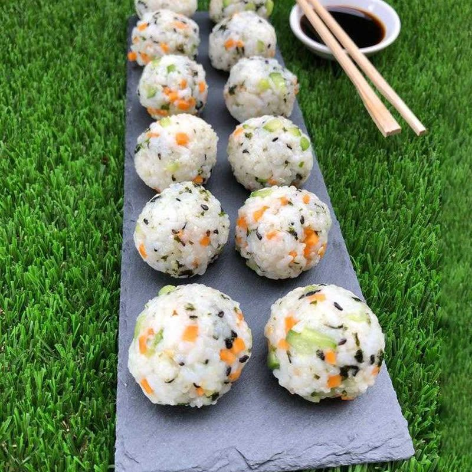

Sushi balls are a charming and delicious variation of traditional sushi, capturing the essence of Japanese cuisine in a single bite. Join us on a journey to discover their history, preparation, and versatility, and how these little delights have become a cherished culinary treasure worldwide. Welcome to the world of sushi balls!
Prep time: 15min
Aditional time: 10min
Total time: 25min
Servings: 6 aprox
You'll find a detailed ingredient list and step-by-step instructions in the recipe below, but let's go over the basics: